A stage illusion, engineered. In A Christmas Carol, the script calls for the Ghost of Christmas Past to levitate out of a large cabinet and drift toward Scrooge. Our client — Prof. Rob Mark Morgan, a set designer — needed that to actually happen on a stage: the armoire doors swing open by themselves, the performer floats forward out of the cabinet and descends to the floor, and the doors close behind her. No motors, no pneumatics, nothing the audience can see. Every motion is driven by stagehands hidden behind the cabinet through cords, torsion springs and linkages.
That constraint is what turned a carpentry job into an engineering one: a 200–250 lb design load carrying a live performer, moved smoothly and repeatably, show after show, on nothing but human effort routed through mechanical advantage.
- ~207 lbfpeak platform force
- 58 / 97 lbfdoor open / close
- 16-linebill of materials
- 4 sheetsreleased drawings
- 2–3stagehands required
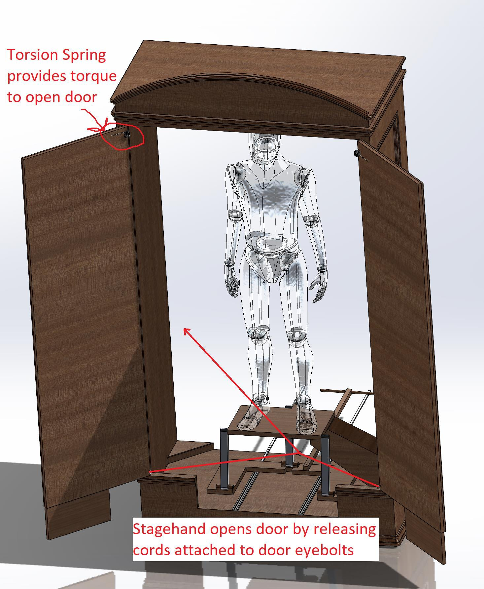
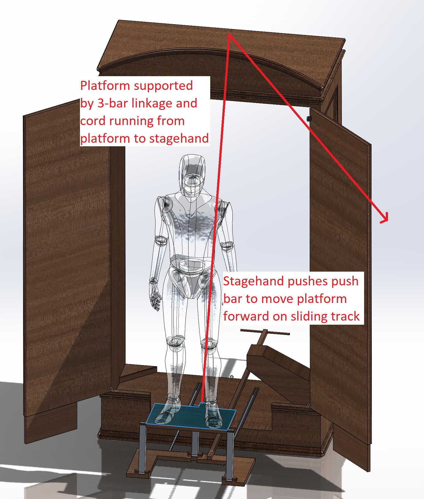
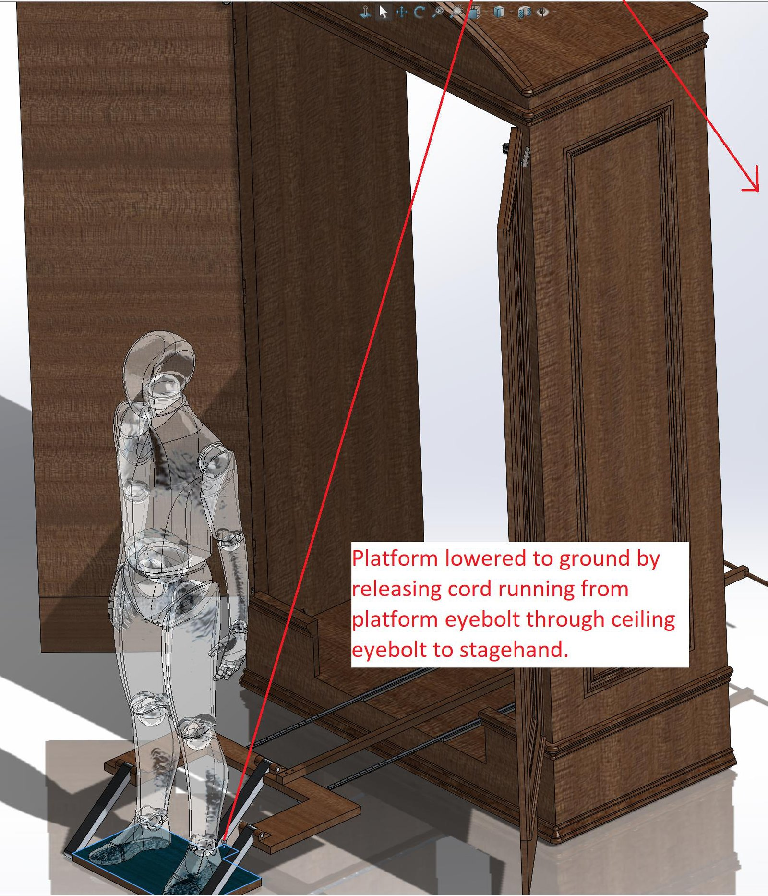
How the illusion works
- Doors. Torsion springs at the hinges drive the doors open; cords threaded through eyebolts on each door and released by a stagehand control the rate, so both doors open together and rest against a doorstop. Retracting the same cords closes them.
- Translation. The performer's platform rides on linear slides and is pushed forward out of the cabinet on a push bar, with built-in bump stops keeping the rails from overrunning their track.
- Descent. A three-bar linkage lifts the platform clear of its support; a cord running from the platform eyebolt up through a ceiling eyebolt to a stagehand then lowers the actor to the stage under control.
- Concealment. A fog machine and dark staging hide the mechanism and the stagehands, which is what lets the whole thing read as levitation.
Design process
- Interviewed the set designer for ~45 minutes to pull functional requirements from the script and the staging, then benchmarked comparable devices and patents.
- Defined 13 weighted customer needs and translated them into 12 quantitative target specifications — platform capacity ≥200–250 lb, door opening 6–10 s, opened door angle ≥135–150°, operator hand force <10–15 lb, foot force <40–75 lb, performer-to-pinch-point clearance ≥8–16 in, cost <$300–500, fabrication ≤15–30 hours.
- Built a function-tree decomposition and morphological chart, then developed and formally evaluated four concepts — Rolling Lever (counterweighted cantilever), Crane (overhead cable and pulley), Vanishing Platform (translating platform) and Self-Driving Linkage (four-bar) — through a weighted decision matrix before committing.
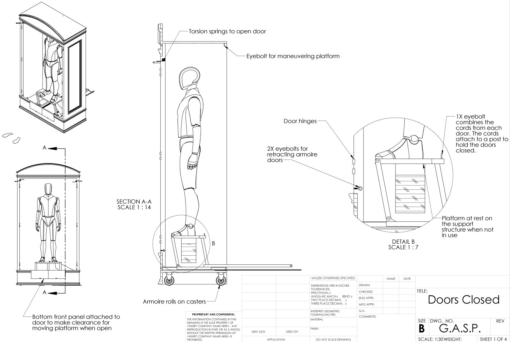
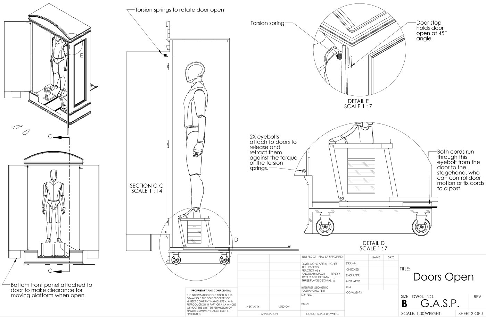
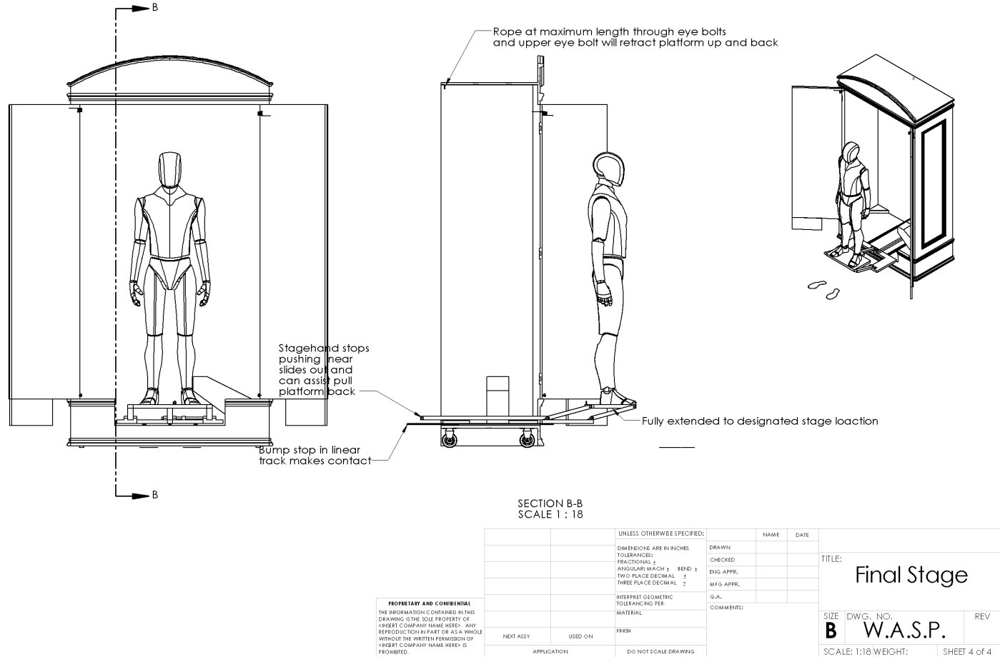
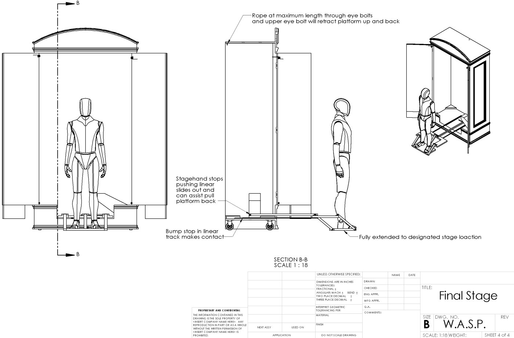
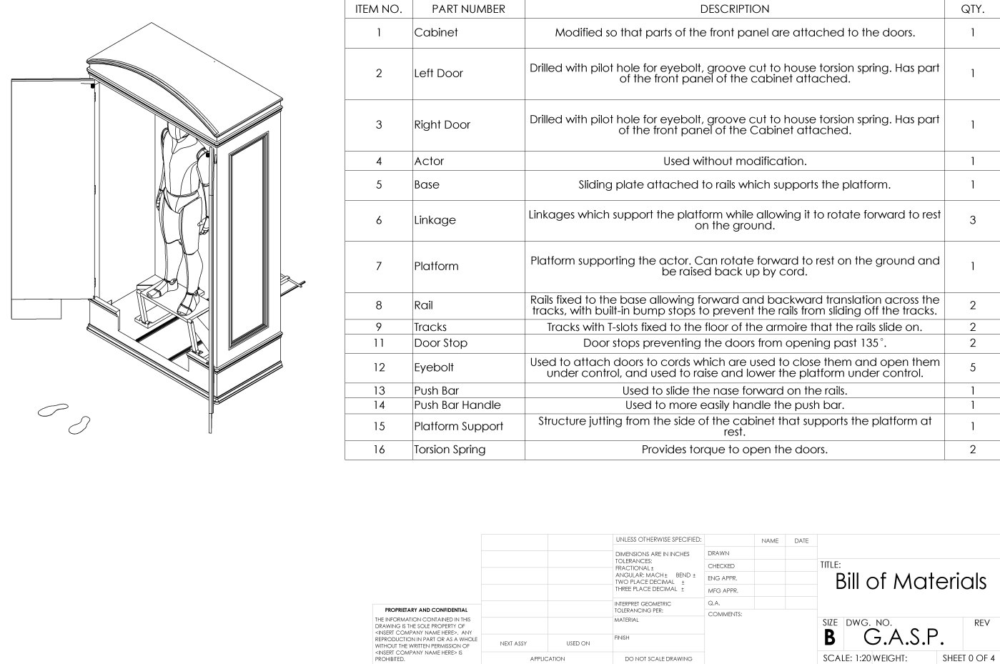
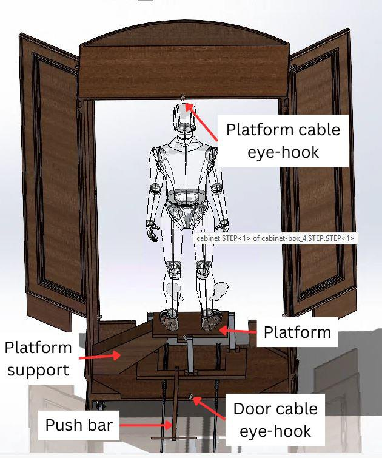
Analysis & verification
- Performed static equilibrium, moment-balance and free-body diagram analysis to evaluate tip-over stability and size the counterweight under full design load.
- Derived push-rod linkage geometry trigonometrically to determine maximum actuation angle and identify three governing limits on smooth, symmetric, repeatable motion: asymmetric operator input rates, unfavorable mechanical leverage against high rotational inertia, and a continuously varying hinge moment arm.
- Verified support beam adequacy through beam deflection analysis (δ = FL³/3EI) and estimated required actuation force through static friction and coefficient analysis.
- Quantified actuation loads in SolidWorks Motion, modeling friction at the rail and track system and at the three-bar linkage — ~207 lbf peak to extend the platform, which is what drove the 2–3 stagehand staffing requirement.
- Stated the limits of the model rather than burying them: friction at the cords and eyebolts was not modeled, and the analysis was quasi-static, so both the door-closing overstatement and the door-opening understatement were identified and explained per mechanism.
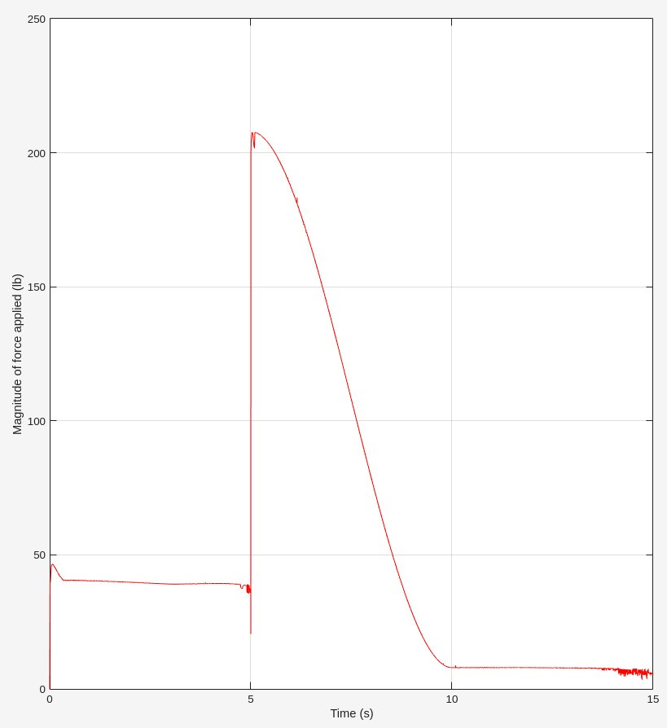
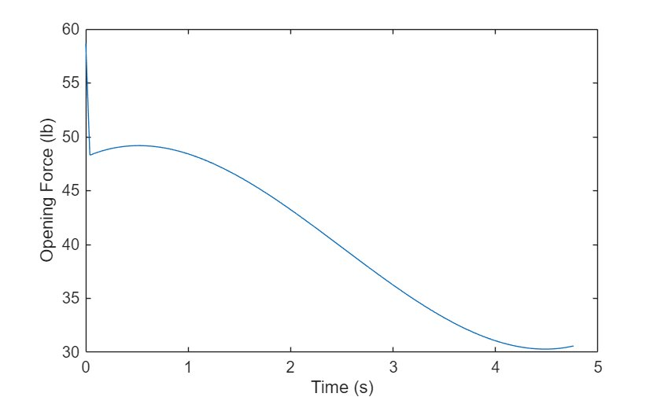
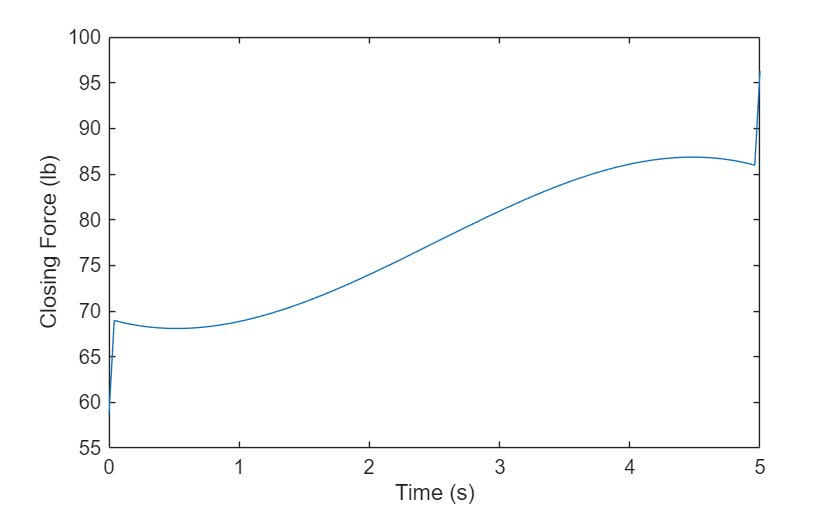
Deliverables
- Released a complete SolidWorks assembly with a 16-line bill of materials and four drawing sheets covering the closed, open, extended and lowered states.
- Authored a technical design report and a standalone operator's manual — a six-step procedure with itemized warnings, written for stagehands rather than engineers.
- SolidWorks
- SolidWorks Motion
- Requirements engineering
- Free-body analysis
- Beam deflection
- Linkage kinematics
- Drawing release
- Operator documentation